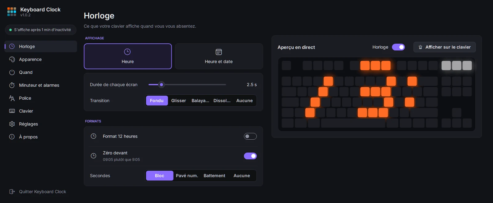
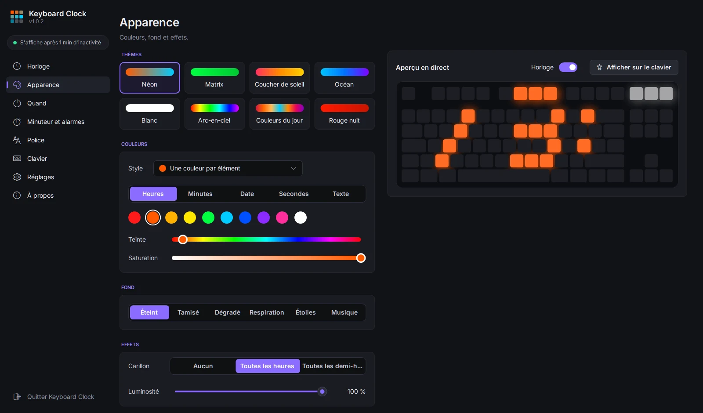
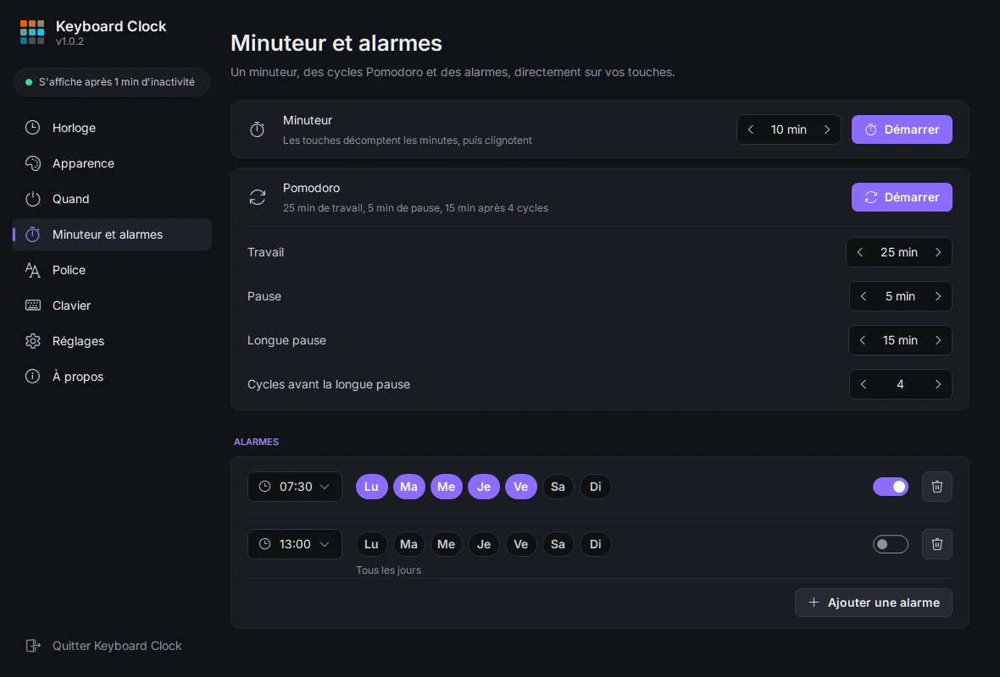
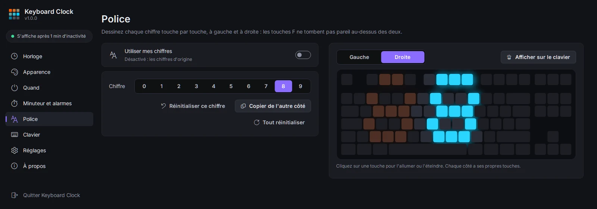

L'heure, en gros chiffres, sur votre clavier RGB
Éloignez-vous de votre PC : Keyboard Clock allume les heures, puis les minutes, sur vos touches, tandis que les secondes défilent sur le côté. Vous la lisez depuis votre lit ou le canapé. Touchez le clavier ou la souris, et votre éclairage habituel revient.
Gratuit · Sans compte · Version 1.0.1 · Logitech G HUB, Éclairage dynamique Windows, OpenRGB
Démo en direct : voici l'heure qu'il est, telle que votre clavier l'affiche.
Votre clavier devient une horloge
Chaque chiffre est dessiné à la main sur de vraies touches. Le clavier montre deux chiffres à la fois, un sur chaque moitié : d'abord les heures, puis les minutes. Les secondes remplissent les neuf touches au-dessus des flèches.
- 1
Installez-le
Un petit installateur, sans compte ni droits d'administrateur. Keyboard Clock attend ensuite près de l'horloge, dans la barre des tâches.
- 2
Éloignez-vous
Après une minute sans toucher la souris ni le clavier (vous choisissez le délai), ou dès que vous verrouillez votre PC avec Win+L.
- 3
Lisez l'heure depuis l'autre bout de la pièce
Les heures, puis les minutes, en gros chiffres sur les touches. Touchez le clavier ou la souris, et votre éclairage habituel revient aussitôt.
Tout ce qu'une horloge sur clavier doit savoir faire
Lisible d'un coup d'œil, et réglable selon votre configuration.
De gros chiffres bien lisibles
Deux chiffres à la fois, dessinés touche par touche sur les touches F, la rangée des chiffres et les lettres. Les secondes remplissent le bloc au-dessus des flèches.
S'affiche quand vous partez
Après le délai de votre choix, dès que vous verrouillez le PC, en permanence ou avec un raccourci clavier. Masquée pendant les jeux en plein écran et dans les applications de votre choix.
Thèmes et couleurs
Néon, Coucher de soleil, Océan, Matrix, Arc-en-ciel, des couleurs qui suivent le moment de la journée, ou vos propres couleurs, des dégradés et une douce lueur en fond.
Minuteur et Pomodoro
Lancez un minuteur depuis la barre des tâches : le clavier affiche les minutes restantes, puis clignote quand le temps est écoulé. Les cycles Pomodoro ont leurs propres couleurs pour le travail et les pauses.
Alarmes et rappels
Choisissez une heure et des jours de la semaine, et tout le clavier clignote. Appuyez sur n'importe quelle touche pour l'arrêter.
S'anime avec votre musique
Les touches autour des chiffres peuvent pulser au rythme de la musique ou afficher le spectre de ce que joue votre PC.
Dessinez vos propres chiffres
Un éditeur intégré : cliquez sur les touches pour redessiner n'importe quel chiffre, côté gauche et côté droit, avec un aperçu en direct.
Mode nuit et carillon horaire
La nuit, tamisez les touches, passez-les en rouge ou éteignez-les. À chaque heure pile, une vague de lumière balaie le clavier.
Dans votre langue
Anglais, français, espagnol, allemand, italien et portugais, au format 12 ou 24 heures, avec la date en alternance si vous le souhaitez.
Une vraie application, pas un script
Tout se règle dans une seule fenêtre, avec un aperçu en direct de votre clavier. Un petit panneau dans la barre des tâches permet de mettre en pause, d'afficher l'horloge ou de lancer un minuteur.




Installé en une minute
Windows 10 ou 11, 64 bits. Keyboard Clock pilote votre clavier via le logiciel d'éclairage que vous avez déjà.
- 1
Téléchargez
KeyboardClockSetup.exe, depuis la dernière version publiée sur GitHub.
- 2
Lancez-le
Aucun droit d'administrateur requis. Si Windows SmartScreen affiche un avertissement, cliquez sur Informations complémentaires, puis sur Exécuter quand même : le logiciel est récent, Microsoft ne le connaît pas encore.
- 3
Gardez votre logiciel d'éclairage
Keyboard Clock pilote les touches via G HUB, l'Éclairage dynamique de Windows ou OpenRGB. Dans G HUB, activez Autoriser les jeux et les applications à contrôler mon éclairage. Keyboard Clock démarre avec Windows ; vous pouvez le désactiver.
Portable
Un seul fichier, rien à installer : téléchargez KeyboardClockPortable.exe et lancez-le.
Python
Python 3.9 ou plus récent, sans dépendances.
pip install git+https://github.com/Ilyomix/keyboard-clockChaque version est compilée par GitHub Actions à partir du code source public, testée, puis publiée avec ses sommes de contrôle SHA-256. Les mises à jour s'installent depuis le logiciel, en un clic.
Quels claviers sont compatibles ?
Tout clavier à éclairage RGB par touche que l'un de ces logiciels sait piloter. La disposition n'a pas d'importance : les touches sont repérées par leur position.
Compatibles
- Claviers Logitech G à éclairage RGB par touche, via G HUB (testé sur un G PRO TKL).
- Razer, Corsair, ASUS, SteelSeries, HyperX et d'autres marques compatibles avec l'Éclairage dynamique de Windows (bêta).
- Claviers pris en charge par OpenRGB, avec son serveur SDK activé (bêta).
- TKL et format complet, ISO et ANSI, AZERTY, QWERTY, QWERTZ et autres dispositions.
Pas (encore) compatibles
- Claviers éclairés uniquement par zones ou par rangées : les chiffres demandent une LED par touche.
- Claviers 60 % et 65 %, qui n'ont pas de rangée de touches F où dessiner.
- macOS et Linux.
- Logitech Gaming Software (LGS), l'ancien logiciel d'avant G HUB : non testé.
Questions fréquentes
Comment afficher l'heure sur mon clavier RGB ?
Installez Keyboard Clock et laissez votre PC tranquille une minute : l'heure apparaît sur votre clavier en gros chiffres, les heures puis les minutes. Vous pouvez aussi l'afficher dès que vous verrouillez le PC, en permanence ou avec un raccourci clavier.
Quels claviers sont pris en charge ?
Les claviers Logitech G à éclairage RGB par touche via G HUB, les claviers compatibles avec l'Éclairage dynamique de Windows (de nombreux modèles Razer, Corsair, ASUS, SteelSeries et HyperX) et les claviers pris en charge par OpenRGB. Claviers TKL et format complet, quelle que soit la disposition.
Rien ne s'affiche sur mon clavier Logitech. Que vérifier ?
Ouvrez G HUB, allez dans les Paramètres, activez « Autoriser les jeux et les applications à contrôler mon éclairage » et laissez G HUB ouvert. Cliquez ensuite sur « Afficher sur le clavier » dans la fenêtre de Keyboard Clock pour tester.
Est-ce compatible avec Razer Synapse, Corsair iCUE ou SteelSeries GG ?
Pas directement : pour ces marques, Keyboard Clock passe par l'Éclairage dynamique de Windows ou par OpenRGB. Sous Windows 11, ouvrez Paramètres > Personnalisation > Éclairage dynamique : si votre clavier y figure, il peut afficher l'horloge. Désactivez l'Éclairage dynamique pour ce clavier, pour que Windows et Keyboard Clock ne pilotent pas les touches en même temps.
Est-ce que ça ralentit mes jeux ?
Non. L'horloge reste masquée quand un jeu ou une vidéo est en plein écran, et la dessiner prend une fraction de milliseconde. Quand elle n'est pas affichée, elle se contente d'attendre.
Est-ce que ça modifie définitivement l'éclairage de mon clavier ?
Non. Dès que vous touchez la souris ou le clavier, votre éclairage habituel revient. G HUB, l'Éclairage dynamique et OpenRGB gardent tous leurs propres réglages.
Pourquoi Windows SmartScreen affiche-t-il un avertissement pour l'installateur ?
SmartScreen met en garde contre les programmes qu'il n'a pas encore vus souvent, et Keyboard Clock est récent. Cliquez sur « Informations complémentaires », puis sur « Exécuter quand même ». Le code est open source, et chaque version est compilée par GitHub à partir de ce code, puis publiée avec ses sommes de contrôle SHA-256.
Puis-je afficher un minuteur ou un Pomodoro sur le clavier ?
Oui. Lancez un minuteur ou un Pomodoro depuis l'icône de la barre des tâches : le clavier affiche les minutes restantes, puis clignote quand le temps est écoulé. Les alarmes fonctionnent aussi, les jours de la semaine de votre choix.
Puis-je changer les chiffres ou les couleurs ?
Oui. Choisissez un thème ou vos propres couleurs, dégradés et fond. L'éditeur de police vous permet de redessiner n'importe quel chiffre en cliquant sur les touches.
Est-ce gratuit ? Collecte-t-il des données ?
Il est gratuit et open source (licence MIT), sans compte, sans publicité et sans télémétrie. Il ne se connecte à Internet que pour vérifier une fois par jour sur GitHub si une nouvelle version existe, ce que vous pouvez désactiver.
Transformez votre clavier en horloge lisible depuis votre lit
Gratuit, open source et léger à télécharger.